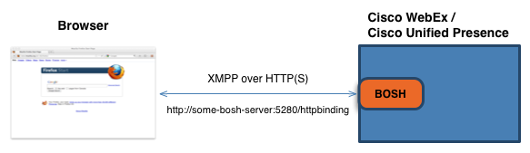

|
Cisco AJAX XMPP Library Deployment Guide |
The Cisco AJAX XMPP Library is a client-side JavaScript library that runs in a browser. The BOSH server supports the client requests using the BOSH interface. Essentially BOSH allows for bidirectional communication between the client and server by efficiently using multiple synchronous HTTP request/response pairs without requiring the use of frequent polling. The client and server exchange data using XMPP messages that are sent as HTTP POSTs to the BOSH service.
|  |
Figure - Logical client/server architecture |
By default the BOSH service is available at the URL http://some-bosh-server:7335/httpbinding on the BOSH server. To test that the
BOSH service is up and running, enter the BOSH URL into a browser. You should receive a HTML page with a HTTP 200 'OK' message along with information about the BOSH protocol. This indicates that
BOSH is running. Note that you should not receive a HTTP 404 'Not Found' error.
Cisco distributes the Cisco AJAX XMPP Library as a zip file. The doc directory contains the documentation and samples
and the themes directory contains the default stylesheet and images for the UI library. To deploy the Cisco AJAX XMPP Library you need to package the JavaScript files and the resources directory as part of your web application and deploy it to your
web server.
There are two deployment models:
CORS (recommended)
Proxy Setup
Both of these are described below:
If your app is running inside a web browser you will find that browsers are typically very restrictive in where they let apps connect to. In particular they honor a "same-origin" policy, and prevent apps from connecting to any domain/port other than the one they were served from.
This means that http://example.com/app.js can connect to a BOSH server at http://example.com/http-bind but not to http://other.example.com/http-bind and not http://example.com:5280/http-bind.
This specification allows web servers to tell web browsers that cross-domain requests are ok and permitted. Support for this standard is implemented in most modern browsers (Firefox 3.5+, Safari 4+, Google Chrome 2+, and Internet Explorer 8+), and is implemented in many XMPP servers, including CUP and Connect Cloud.
Specify the absolute URL to the BOSH server in the "httpBindingURL" configuration properties (either globally or as passed to Client.connect):
var connectArgs = {
httpBindingURL: "https://im1.ciscowebex.com/http-bind"
};
client.connect(userJid, password, connectArgs);
Note:
Cloud deployment uses CORS against a URL such as https://im1.ciscowebex.com/http-bind. Also, an important thing to note here is that cloud uses 'https' only.
You can use the 'host' or 'dig' command to determine the approriate cluster for cloud deployment.
Syntax:
host [ -aCdlnrTwv ] [ -c class ] [ -N ndots ] [ -R number ] [ -t type ] [ -W wait ] name [ server ]
dig [ @server ] [ -b address ] [ -c class ] [ -f filename ] [ -k filename ] [ -p port# ] [ -t type ] [ -x addr ] [ -y name:key ] [ name ] [ type ] [ class ] [ queryopt... ]
host -t srv _xmpp-client._tcp.<domain> host -t a <target from SRV>
Note:
Internet Explorer requires the http binding URL must be targeted to the same scheme as the hosting page.
This means that if your AJAX page is at http://example.com, then your httpBindingURL must also begin with HTTP. Similarly, if your AJAX page is at https://example.com, then your httpBindingURL must also begin with HTTPS. This restriction is for IE only and is resolved in IE 10.
http://example.com/httpbinding as the proxy URL to create for your web server. Any requests to that URL are
forwarded to http://some-bosh-server.com:7335/httpbinding, and any data received because of those requests are passed on
to the web browser as if it's coming from http://example.com/httpbinding.
This procedure describes how to configure the HTTP proxy:
/httpbinding' ==> 'http://some-bosh-server.com:7335/httpbinding'.
To do so, add the following entry in the main Apache config file httpd.conf:
ProxyPass /httpbinding http://some-bosh-server.com:7335/httpbinding keepalive=On disablereuse=Off
httpd.conf, enable the following modules.You can do this either by adding these lines or by removing the comment tags if they already exist but are commented out.
LoadModule proxy_module modules/mod_proxy.so LoadModule proxy_http_module modules/mod_proxy_http.so LoadModule rewrite_module modules/mod_rewrite.so
httpd.conf file should be modified to specify https as the
protocol rather than http.
ProxyPass /httpbinding https://some-bosh-server.com:7335/httpbinding keepalive=On disablereuse=Off
httpd.conf file.
LoadModule proxy_module modules/mod_ssl.so
httpd.conf file should be modified to activate the SSLProxyEngine.
SSLProxyEngine on
nginx.conf.
server {
.......
location /httpbinding {
access_log off;
proxy_pass http://some-bosh-server:7335/httpbinding;
proxy_set_header X-Real-IP $remote_addr;
proxy_set_header Host $host;
proxy_set_header X-Forwarded-For $proxy_add_x_forwarded_for;
}
}
Restart the nginx server for the changes to take effect.
http://example.com/httpbinding in your web browser. You should receive a HTML page with a HTTP 200 'OK' message along with information about the BOSH protocol. This indicates that
BOSH is running and setup correctly. You should get the same page if you try to go to the URL
http://some-bosh-server.com:7335/httpbinding directly. If you get a HTTP 404 'Not Found' error, this means your
web server is not proxying the request correctly.
THE SPECIFICATIONS AND INFORMATION REGARDING THE PRODUCTS IN THIS MANUAL ARE SUBJECT TO CHANGE WITHOUT NOTICE. ALL STATEMENTS, INFORMATION, AND RECOMMENDATIONS IN THIS MANUAL ARE BELIEVED TO BE ACCURATE BUT ARE PRESENTED WITHOUT WARRANTY OF ANY KIND, EXPRESS OR IMPLIED. USERS MUST TAKE FULL RESPONSIBILITY FOR THEIR APPLICATION OF ANY PRODUCTS.
THE SOFTWARE LICENSE AND LIMITED WARRANTY FOR THE ACCOMPANYING PRODUCT ARE SET FORTH IN THE INFORMATION PACKET THAT SHIPPED WITH THE PRODUCT AND ARE INCORPORATED HEREIN BY THIS REFERENCE. IF YOU ARE UNABLE TO LOCATE THE SOFTWARE LICENSE OR LIMITED WARRANTY, CONTACT YOUR CISCO REPRESENTATIVE FOR A COPY.
The Cisco implementation of TCP header compression is an adaptation of a program developed by the University of California, Berkeley (UCB) as part of UCB's public domain version of the UNIX operating system. All rights reserved. Copyright © 1981, Regents of the University of California.
NOTWITHSTANDING ANY OTHER WARRANTY HEREIN, ALL DOCUMENT FILES AND SOFTWARE OF THESE SUPPLIERS ARE PROVIDED "AS IS" WITH ALL FAULTS. CISCO AND THE ABOVE-NAMED SUPPLIERS DISCLAIM ALL WARRANTIES, EXPRESSED OR IMPLIED, INCLUDING, WITHOUT LIMITATION, THOSE OF MERCHANTABILITY, FITNESS FOR A PARTICULAR PURPOSE AND NONINFRINGEMENT OR ARISING FROM A COURSE OF DEALING, USAGE, OR TRADE PRACTICE.
IN NO EVENT SHALL CISCO OR ITS SUPPLIERS BE LIABLE FOR ANY INDIRECT, SPECIAL, CONSEQUENTIAL, OR INCIDENTAL DAMAGES, INCLUDING, WITHOUT LIMITATION, LOST PROFITS OR LOSS OR DAMAGE TO DATA ARISING OUT OF THE USE OR INABILITY TO USE THIS MANUAL, EVEN IF CISCO OR ITS SUPPLIERS HAVE BEEN ADVISED OF THE POSSIBILITY OF SUCH DAMAGES.
Any Internet Protocol (IP) addresses and phone numbers used in this document are not intended to be actual addresses and phone numbers. Any examples, command display output, network topology diagrams, and other figures included in the document are shown for illustrative purposes only. Any use of actual IP addresses or phone numbers in illustrative content is unintentional and coincidental.
Cisco and the Cisco logo are trademarks or registered trademarks of Cisco and/or its affiliates in the U.S. and other countries. To view a list of Cisco trademarks, go to this URL:http://www.cisco.com/go/trademarks. Third-party trademarks mentioned are the property of their respective owners. The use of the word partner does not imply a partnership relationship between Cisco and any other company. (1110R)
© 2014 Cisco Systems, Inc. All rights reserved.